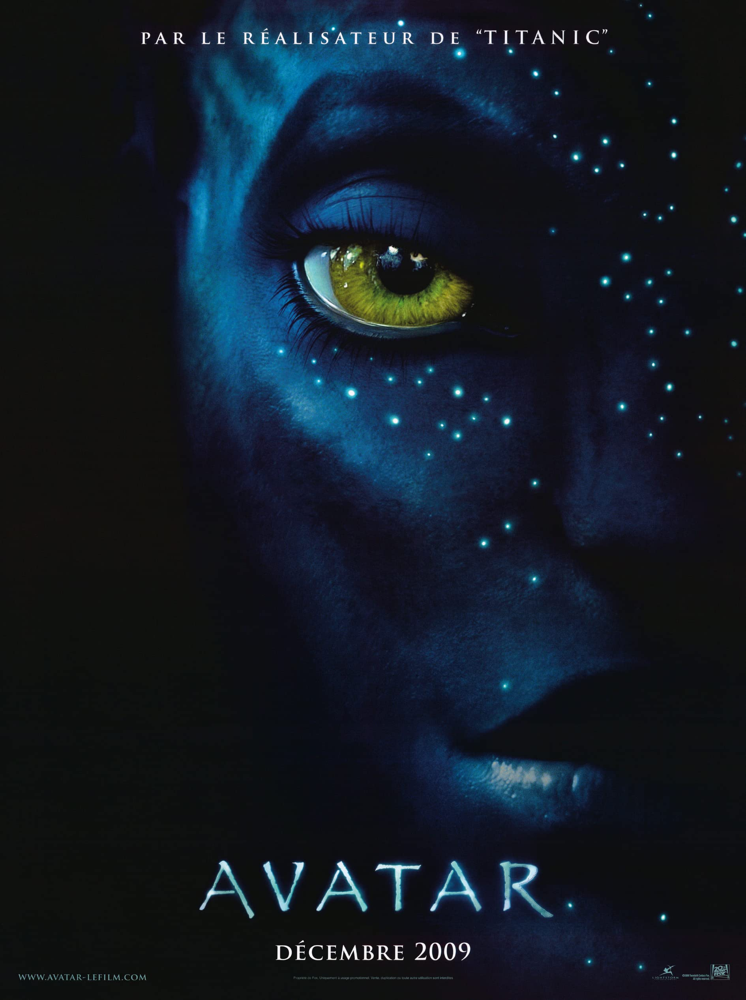

1. AVATAR
Sur le monde extraterrestre luxuriant de Pandora vivent les Na'vi, des êtres qui semblent primitifs, mais qui sont très évolués. Jake Sully, un ancien Marine paralysé, redevient mobile grâce à un tel Avatar et tombe amoureux d'une femme Na'vi.
2. Avengers Endgame

Le Titan Thanos, ayant réussi à s'approprier les six Pierres d'Infinité et à les réunir sur le Gantelet doré, a pu réaliser son objectif de pulvériser la moitié de la population de l'Univers. Cinq ans plus tard, Scott Lang, alias Ant-Man, parvient à s'échapper de la dimension subatomique où il était coincé. Il propose aux Avengers une solution pour faire revenir à la vie tous les êtres disparus, dont leurs alliés et coéquipiers : récupérer les Pierres d'Infinité dans le passé.
3. AVATAR 2
Jake Sully et Ney'tiri ont formé une famille et font tout pour rester aussi soudés que possible. Ils sont cependant contraints de quitter leur foyer et d'explorer les différentes régions encore mystérieuses de Pandora.